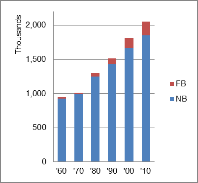

The foreign-born (FB) population increased from 21,408 in 1960 to 205,144 in 2010. That was an increase of 858.3 percent. The foreign-born share changed from 2.3 percent to 10.0 percent.
The share of the overall population that was native-born (NB) increased by 99.4 percent.
New Mexico: Population 1960-2010 
The first chart below shows the three population change factors for three periods adjusted for annual average amounts. Natural change (B-D) was the primary component of population increase in all periods.
The second chart shows the same data but with an adjustment to reflect births to immigrants shifted to NIM. In it, B-D remained the primary factor in population increase
New Mexico: Sources of Population Change 1990-2013 New Mexico: Sources of Population Change (Adjusted) 1990-2013
B-D NDM NIM B-D NDM NIM 90-'99 64.0% 18.9% 17.1% 90-'99 52.4% 18.9% 28.6% 00-'09 64.7% 11.6% 23.7% 00-'09 45.8% 11.6% 42.6% 10-'13 86.1% neg. 13.9% 10-'13 54.7% neg. 45.3%